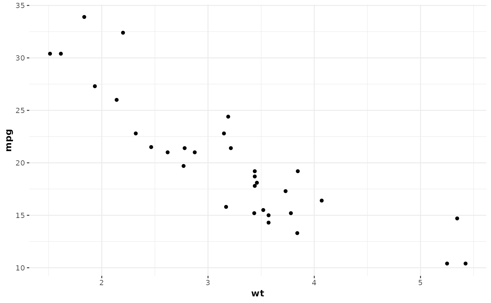

Common theme used across all plots generated in {ggstatsplot} and assumed
by the author to be aesthetically pleasing to the user/reader. The theme is a
wrapper around theme_bw().
All {ggstatsplot} functions have a ggtheme parameter that let you choose
a different theme.
Examples
library(ggplot2)
ggplot(mtcars, aes(wt, mpg)) +
geom_point() +
theme_ggstatsplot()
